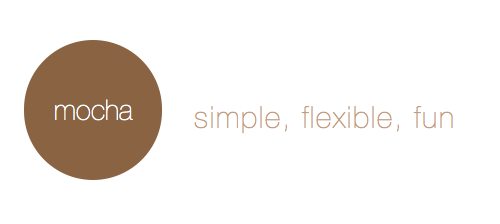
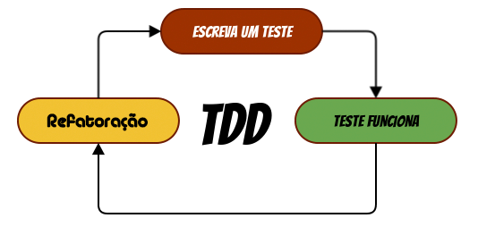
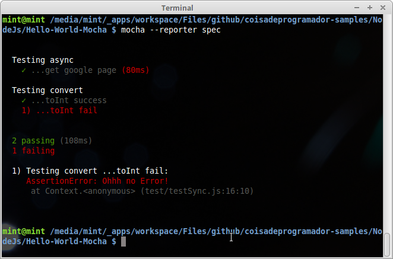
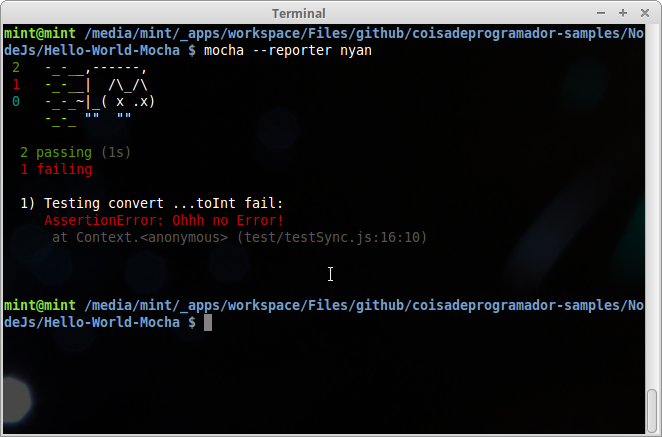
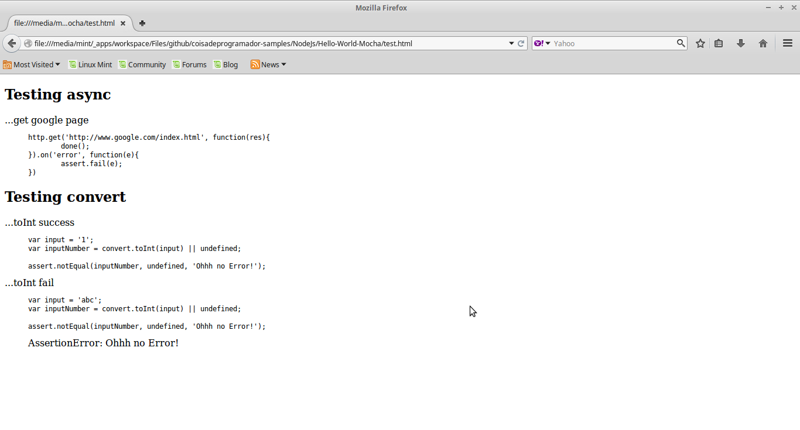

O que é?

O mocha é um framework de teste JavaScript, que possibilita a cobertura dos testes tanto no back-end quanto no front-end. Devido sua flexibilidade e simplicidade aceita os estilos de teste TDD, BDD e QUnit.
Por que testar JavaScript?
Independente da linguagem de programação os testes devem ser adotados em nossa cultura de desenvolvimento. O teste deve ser a primeira etapa do desenvolvimento, nesta etapa podemos tirar dúvidas em níveis de arquitetura, abstração, dependências, ou seja, com o desenvolvimento orientado a testes, podemos garantir a qualidade de software, o ciclo do TDD abaixo exemplifica o processo.

Já o BDD aborda um desenvolvimento além dos testes envolvendo o negócio, aproximando a equipe de desenvolvimento e outras áreas da organização (Qualidade ou Negócios).
Como instalar o mocha?
Abra sua linha de comando e digite.
npm install -g mocha
Vamos criar o projeto.
Crie uma pasta para seu projeto, entre na pasta e digite em sua linha de comando.
npm init
Okay, crie uma pasta chamada test e veja uma breve introdução da estrutura de testes do mocha.
- modules\convert.js
Neste arquivo será criado um helper para teste de conversão de valores inteiros.
module.exports = {
toInt: function(input){
return parseInt(input);
}
}
- test\testSync.js
Foram criados dois testes de conversão.
var assert = require('assert');
var convert = require('../modules/convert');
describe('Testing convert', function(){
it('...toInt success', function(){
var input = '1';
var inputNumber = convert.toInt(input) || undefined;
assert.notEqual(inputNumber, undefined, 'Ohhh no Error!');
});
it('...toInt fail', function(){
var input = 'abc';
var inputNumber = convert.toInt(input) || undefined;
assert.notEqual(inputNumber, undefined, 'Ohhh no Error!');
});
});
- test/testAsync.js
Teste para obter a página inicial do Google utilizando o modo assíncrono, passando o parâmetro callback done.
var assert = require('assert');
var http = require('http');
var convert = require('../modules/convert');
describe('Testing async', function(){
it('...get google page', function(done){
http.get('http://www.google.com/index.html', function(res){
done();
}).on('error', function(e){
assert.fail(e);
})
});
});
- index.js
Arquivo principal com utilização do helper.
var util = require('util');
var convert = require('./modules/convert');
console.log(util.format('HELLO WORLD #%s', convert.toInt('123')));
Para executar digite em sua linha de comando
mocha
Interfaces
Algumas interfaces podem ser utilizadas para a criação do testes.
| TDD | BDD | Descrição |
|---|---|---|
| suite | describe | Define um conjunto de testes |
| test | it | Define um caso de teste |
| suiteSetup | before | Executado antes de cada conjunto de teste |
| suiteTeardown | after | Executado após cada conjunto de teste |
| setup | beforeEach | Executado antes de cada caso de teste |
| teardown | afterEach | Executado após cada caso de teste |
Outros tipos de interface estão disponibilizadas ex: (Export e o QUnit).
Assertions

Além do assert que é um módulo nativo do NodeJs, outros módulo podem ser utilizados para "assertions", desde que este módulo retorne uma exception.
- should.js para BDD Style
- expect.js para Style assertions
- chai.js incluí os módulos assert, expect e should Style
- better-assert c-style.
Executando os testes
Após a instalação o comando mocha é disponibilizado para execução dos testes via linha de comando, a execução pode ser parametrizada, veja a lista dos principais parâmetros.
--timeoutDefine o tempo máximo de execução do teste--uiDefine o a interface de teste bdd|tdd|export--recursiveInclui sub pastas.--compilersPossibilita a pré compilação dos testes ex: (Babel Js).
Pronto para a execução?
Tipos de retorno "reporters"
- Spec
mocha --reporter spec
Retorno padrão em linha de comando com uma visão hierárquica por conjunto de testes.

- Nyan
mocha --reporter nyan
Retorno em linha de comando descontraído.

- Doc
mocha --reporter doc > test.html

Exporta o resultado no formato html em linha de comando para um arquivo.
Existem diversos "reporters" para o mocha para maiores informações veja.
Vamos ao "improve"?
Podemos configurar o mocha para ser gerenciado pelo npm ou por automatizadores de tarefas gulp e grunt, desta maneira definimos uma tarefa de execução de testes.
Npm
Para que seja possível a execução dos testes pelo NPM, será necessário alterar o arquivo package.json.
No atributo scripts estão todas as tarefas executadas pelo NPM, será necessário adicionar o atributo test informando o comando de execução de teste, veja:
"scripts": {
"test": "mocha --reporter spec"
}
Após esta configuração, entre em sua linha de comando e digite o comando abaixo.
npm test
Gulp
npm install gulp -g
npm install gulp-mocha --save-dev
Arquivo de configuração do Gulpfile.js
var gulp = require('gulp');
var mocha = require('gulp-mocha');
gulp.task('test', function (cb) {
gulp.src('test/**/*.js')
.pipe(mocha({
reporter: 'spec',
ui: 'bdd',
timeout: 30000,
}))
.on('end', function () {
cb();
});
});
gulp.task('default', ['test']);
Grunt
npm install grunt -g
npm install grunt-mocha --save-dev
Arquivo de configuração do Gruntfile.js
module.exports = function(grunt) {
// Add the grunt-mocha-test tasks.
grunt.loadNpmTasks('grunt-mocha-test');
grunt.initConfig({
// Configure a mochaTest task
mochaTest: {
test: {
options: {
reporter: 'spec',
captureFile: 'results.txt', // Optionally capture the reporter output to a file
quiet: false, // Optionally suppress output to standard out (defaults to false)
clearRequireCache: false // Optionally clear the require cache before running tests (defaults to false)
},
src: ['test/**/*.js']
}
}
});
grunt.registerTask('default', 'mochaTest');
};
Código fonte
Veja no GitHub
Conclusão
O teste não pode ser encarado com uma necessidade e sim uma realidade, teste e qualidade andam lado a lado.
A utilização do framework mocha vai além deste tutorial, outras formas de aplicação podem ser encontradas no próprio site do mocha.
Até a próxima!